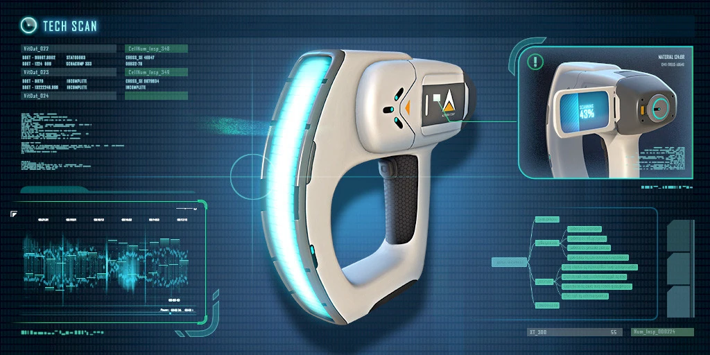
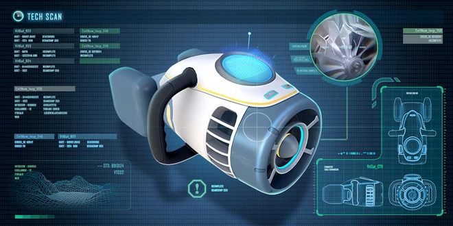
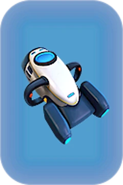
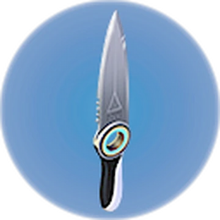
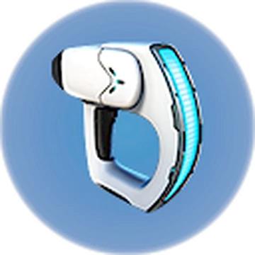
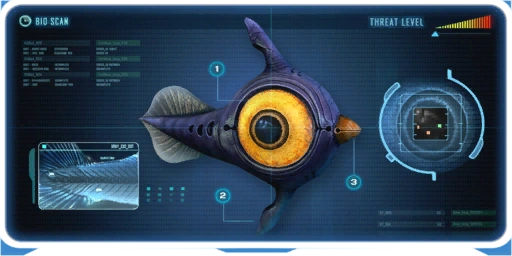

Subnautica is a 2018 action-adventure survival game developed and published by Unknown Worlds Entertainment. The player controls Ryley Robinson, a survivor of a spaceship crash on an alien oceanic planet, which they are free to explore. The main objectives are to find essential resources, survive the local flora and fauna, and find a way to escape the planet.
Subnautica was released in early access for Windows in December 2014, macOS in June 2015, and Xbox One in May 2016. The game was released out of early access in January 2018 for macOS and Windows, with versions for PlayStation 4 and Xbox One in December 2018. The physical console versions were published by Gearbox Publishing. The Nintendo Switch, PlayStation 5, and Xbox Series X/S versions were released in May 2021, A Nintendo Switch 2 version was released in February 2026. It received generally positive reviews from critics and sold over 5 million copies by January 2020.
The tools you will need:

The Scanner: The scanner is the most essential tool required to beat the game as it give the player the ability to obtain new blueprints for usefull tools and technology as well as vehicles.

The Seaglide: The Seaglide, while optional, is still a very useful tool, allowing the player to travel underwater at faster speeds, While also giving the player a light for night time.
Inventory icons:



z`
These tools, along with the survival knife are the ideal starting goal for any player.
The alien fauna on planet 4546B is very diverse and many creatures call this planet home, starting with:

The common Peeper: An indiginous species to planet 4546B, the Peeper is probably the most well known creature on the planet.
While the peeper is well adapted to survive in shallow waters, a number of its features serve no discernible purpose. It would appear to be just as well suited to survive in deeper waters, and is somewhat more intelligent than the usual small herbivore, while also sporting an impressive calorie count.
Leviathan Class Organisms: Leviathan is a classification given to extremely large creatures of the Subnautica universe. Although the wording of the Reaper Leviathan's databank entry would seem to imply that the leviathan classification is exclusive to predatory life forms, this is not the case; any fauna species of a suitable size can be classified as a Leviathan.
Leviathans are typically the main selling point of the game due to their sheer size and uniqueness.
FUN FACT: Early on, players discovered a brilliant hack to get free battery recharges without having a charging station. By crafting a basic tool (like a Scanner or Repair Tool) using a drained battery, and then removing that battery before using the tool, the game would automatically pop the battery back out with 100% charge restored.
Another fun fact is that by holding a fish you can coax aggressive fauna into eating that instead of you, although it won't work on species in the leviathan class.